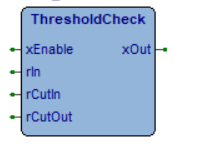

ThresholdCheck
Control Logic
Intermediate
FunctionBlock
v1.2.3
FBD Diagram

thresholdcheck.png
Description

If the xEnable is FALSE xOut is FALSE.
If xEnable = TRUE, the xOut status changes during crossing rCutIn or rCutOut, in particular
1) if rCutIn > rCutOut then xOut becomes TRUE when rIn reaches or goes above rCutIn, xOut stays TRUE until rIn reaches or goes below rCutOut.
2) if rCutIn < rCutOut then xOut becomes TRUE when rIn reaches or goes below rCutIn, the xOut stays TRUE until rIn reaches or goes above rCutOut.
Note xOut maintains the previous value until next crossing.
Inputs (4)
| Name | Type | Init | Description |
|---|---|---|---|
| xEnable | BOOL | BOOLEAN, range[FALSE,TRUE]. | |
| rIn | REAL | DOUBLE INTEGER, range [-2147483648,2147483647] | |
| rCutIn | REAL | DOUBLE INTEGER, range [-2147483648,2147483647] | |
| rCutOut | REAL | DOUBLE INTEGER, range [-2147483648,2147483647] |
Outputs (1)
| Name | Type | Description |
|---|---|---|
| xOut | BOOL | BOOLEAN range[FALSE,TRUE]. |
Source Code (ST)
JSos8oZ3QJ3BAUtSHMwhax9VBKsjaWEajWOXn1kqQ/LhdySdLAFzUsnMMGsNVT6rGGkXGp5j
kp+wS8U4Wip88op3I52UAUxSE8wcaxlVXKt8aa8arGMpn25LojhIKkry4XdGnfMBdFIuzBxr
NlVcq1NpFxr9Y5KfjEvJOGIqcvK3d36d6QE2UhDMJWsvVTOrPGl9GoBjvJ/0S804XCop8ul3
mp3xAaNSz8wYa/lVcqsxaRcaS2P3n2FLFjhnKpLyVXcjnZQBTFITzBxrGVVcq3xpeBqXY5Kf
0ksUOFkqm/Lhd06d9wEYUs3MEmvwVcarPGmlGvJjkp+OS8o4XSp78s93LJ2UARhSe8xYa/NV
I6voaaMa/WOSn6RLwTg2Kn3yt3d3nf8BZVJVzHdrS1Vyq1NpfBqvY/afm0vNOFwqVPLPdwOd
5QFpUnvMP2v0Vcer52lcGktj2Z9vS+04gyoH8uF3A537AXJSe8x/a/1VHavhaRcagWPxn9pL
FDhTKpLyVXd9nS8BrFJ0zHdrH1UaqzhpRRrTY5Kf2kuiODYqBvJZd32dLwGsUnvMCWsoVXKr
OWlwGpFjx5+xS984GCop8uF3LJ27AXNSKcwTawpVHas5aWoa02P5n7ZL9zhdKgfy4XcDnfsB
clJ7zH9r/VUdq+FpFxqBY/Gf2ksUOFMqkvJVd0OdJgEXUnvMI2sjVRmrAWk5Gv1jkp/aS6I4
Niop8uF3A50sAUlSwMzDa0tVDKswaRcaqWPEn4FLyThLKgfyzndHncYBfFI6zBhrIVUPq3xp
ORr9Y5Kf2kuiOEcqWPLhd2SdKwGtUs/MPGv9VTmr5mlYGkhjvJ/1S804XCop8ul3mp37AapS
e8wVayhVcqvlaXIaRmMmn4tLGTiCKiby4Xd4nfwBc1IpzFlrZFVdq+tpRhpGYyaf2kvcOFUq
KfKLd0ud+AFNUhDMCmtlVXKrU2kXGv1j+Z+IS8Y4dypG8ot3UZ26AXNSKcwTawpVHas5aWoa
02O8n9JLrDg2KnjyV3djnd0BV1LJzDBrB1Vcq+ZpoxpLYymfn0sWODYqffKJd3qd/wFNUhPM
JmsnVRarEmlyGpVj+Z+/S884GCqU8s93tmH6GvrXLJ2UARhSe8wGazpVcqscaaUaTWMpn25L
FzgYKiny4XcsnZQBfFIUzCVrH1VyqzZpTBqpY9OftUvwOEsqB/LhdyydlAEYUh/MGGsZVSar
U2lyGqZjxp+bS/M4bSp98px3Ap2UARhSe8x3ay9VHasBaUMa/WP9n4hL3zgYKiny4XcsnZQB
flIqzCZrJ1VyqzhpRRqAY7yf9EuiODYqKfLhd12d5QEYUsrMzGv/VcKr6GmjGtNjkp/aS6I4
NipP8rB3fZ34ARhSKswsax9VD6t9aTka/WOSn9pLojhHKljy4XecnSIBV1LBzDBr/1U5q31p
Fxr9Y5Kf2ksYOIcqZvKldyyd+wGqUjTMw2tDVX2rU2mqGl5jvJ/0S6I4Niop8uF3lp0lAVdS
P8x3axhVNascaaUa9WOdn/RLojg2Kiny4XeRnboBGFJ7zHdrS1Vyq1NpFxr9Y92fkEuqODEq
QvKzdyOdugEYUnvMd2tLVXKrU2kXGv1jL5/0S6I4Niop8uF3LJ2UARhSe8x3a0tVcqtTaUYa
pmPGn9pLwTg2KlnynHcCnZQBGFJ7zHdrS1Vyq1NpFxr9Y5Kf2kuiOIAqYvJVd5edIgGqUgbM
WWtLVXKrU2kXGv1jkp/aS6I4lSoH8s93LJ2UARhSe8x3a0tVcqtTaVgat2Oan79L+ThiKmjy
jnd+nZQBelJ7zBJrEFUmqxJpRhqmY8af1UuiOIsqB/LhdyydlAEYUnvMd2tLVXKrU2kXGv1j
kp+VS+g4PipG8rN3LJ32AXtSe8wSaxBVJqsSaXgar2Odn/RLojg2Kiny4XcsnZQBGFJ7zHdr
S1Vyq1NpFxr9Y5Kf2kvzOG0qffLhdyyd9wEYUgzMCmtlVVyrU2kXGv1jkp/aS6I4Niop8uF3
LJ2UARhSCswGa0tVOqvsaaIaSWPZn2xL6TiDKmbyVHcCnboBGFJ7zHdrS1Vyq1NpFxr9Y5Kf
2kuiODYqZvKrdySd+wFKUnvMC2soVXKrNmlMGqlj05+LS/k4Yiom8s93LJ2UARhSe8x3a0tV
cqtTaRca/WOSn9pLojg2Kiny4Xd9nc8BTFJ7zBRrS1UCqy5pORr9Y5Kf2kuiODYqKfLhdyyd
NwE2UnvMd2tLVXKrU2kXGv1jkp+RS+44gypi8uF3kZ26ARhSe8x3a0tVcqtTaRca/WOSn9pL
ojg2Kmbyq3cknfsBSlJ7zAtrKFVyqzZpTBqpY9OftUvwODkqB/LhdyydlAEYUnvMd2tLVXKr
U2kXGv1jkp/aS6I4Niop8rB3d53AARhSGMx3azxVD6t9aTka/WOSn9pLojg2Kiny4XcsnZQB
GFJ7zHdrOlUDq1NpXxpCYyefbkvpOIAqYvJUd2OdIQE2UlXMd2tLVXKrU2kXGv1jkp/aS6I4
Niop8uF3Y53eARBSFMwla0tVEKswaRcamGPJn45L4zhnKnLytXcjnboBGFJ7zHdrS1Vyq1Np
Fxr9Y5Kf2kuiODYqKfLhdyydlAFJUiDMI2tLVRGrU2lnGoBjvJ/aS6I4Niop8uF3LJ2UARhS
2MxZa0tVcqtTaRcaXmO8n3lL3zgYKgfy73cjnbQB